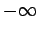
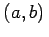

Eine zusammenhängende Menge reeller Zahlen mit den Endpunkten a und b, wobei a<b ist und auch a gleich  und b gleich  sein kann, wird Zahlenintervall mit den Endpunkten a und b genannt. Wenn der Endpunkt nicht selbst zum Intervall gehört, spricht man vom offenen Intervallende, im entgegengesetzten Falle vom abgeschlossenen Intervallende.
sein kann, wird Zahlenintervall mit den Endpunkten a und b genannt. Wenn der Endpunkt nicht selbst zum Intervall gehört, spricht man vom offenen Intervallende, im entgegengesetzten Falle vom abgeschlossenen Intervallende.
Die Angabe eines Zahlenintervalls erfolgt durch seine Endpunkte a und b, indem diese in Klammern gesetzt werden. Eine eckige Klammer steht für ein geschlossenes Intervallende, eine runde für ein offenes. Es wird zwischen beiderseits offenen Intervallen (a,b), halboffenen Intervallen [a,b) bzw. (a,b] und abgeschlossenen Intervallen [a,b] unterschieden. Für offene Intervalle findet man auch die Bezeichnung ]a,b[ an Stelle von , analog [a,b[ an Stelle von [a,b). In der graphischen Darstellung werden die Endpunkte eines offenen Intervalls durch volle Pfeilspitzen, die eines abgeschlossenen Intervalls durch Punkte gekennzeichnet.